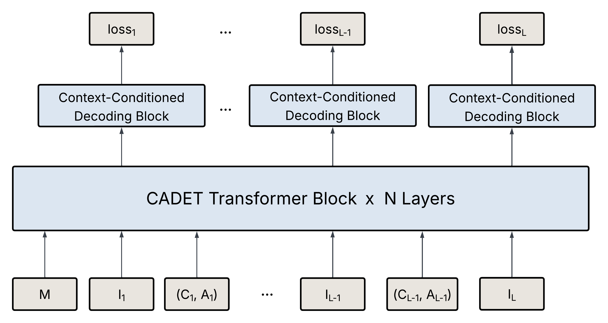
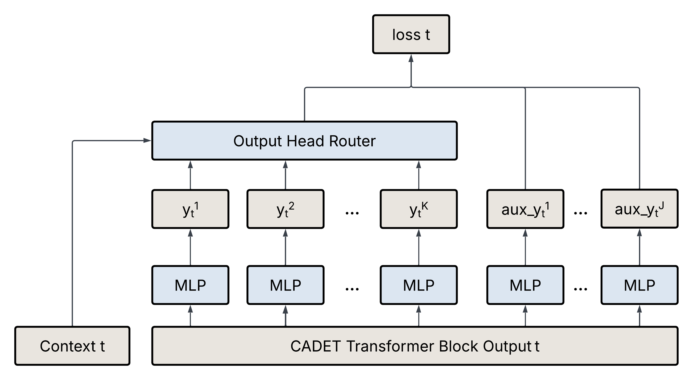
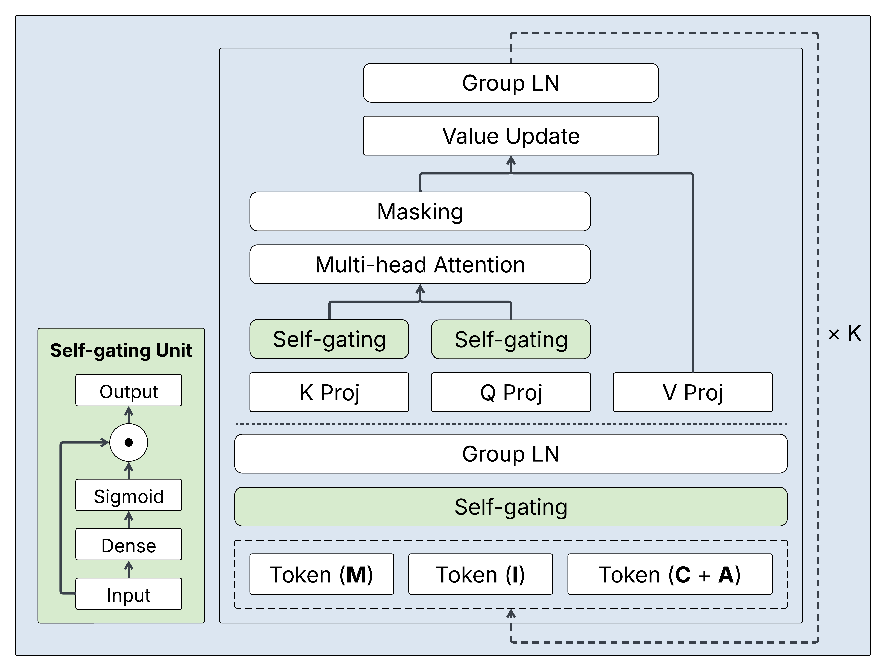

CADET: Context-Conditioned Ads CTR Prediction With a Decoder-Only Transformer
LinkedIn 提出 Decoder-Only Transformer 架构 CADET 用于广告 CTR 预估，引入上下文条件解码和自门控注意力机制。
INSIGHT将 NLP 领域成熟的 Decoder-Only Transformer 范式迁移到 CTR 预估场景。关键创新在于 context-conditioned decoding 显式建模位置等后评分信号，以及 timestamp-based position embedding 捕捉用户行为的时序模式。这表明 CTR 模型架构正在向统一 Transformer 范式收敛。
业务关联社区搜索排序模型可借鉴 CADET 的架构思路：用 decoder-only transformer 统一建模用户特征序列，通过 context-conditioned 机制引入展示位置、时间等上下文信号。自门控注意力可缓解搜索排序模型训练中的不稳定问题。
证据在 LinkedIn 广告平台上线，CTR 相比生产模型 LiRank 提升 11.04%。采用 tensor packing 和定制注意力 kernel 优化推理性能以满足线上延迟要求。
CADET：LinkedIn 用一个 decoder-only Transformer 替换整套广告 CTR 模型，线上 CTR 提升 11.04%
我的判断：做广告排序的团队值得读。它没有发明新的注意力结构，价值在于把生成式推荐搬进广告时一定会碰到的几个现实问题讲清楚了：广告位置要等打完分才知道，线上序列有延迟，训练不稳定，几百个候选要在 50 ms 内打完分。CADET（Context-Conditioned Ads Decoder-Only Transformer，按上下文分头预测的广告 Transformer）的核心思想一句话：用户历史按“曝光—动作”交替排成一条序列，交给一个 decoder-only Transformer 逐条预测点击；位置这类打分后才确定的信息不当输入，而是给每个位置档各配一个输出头。几个关键数字：线上对比原生产模型 LiRank，CTR 提升 11.04%，CPC 下降 10.9%；离线 AUC 0.8554，HSTU 基线最高 0.8505；去掉按位置分头的设计，AUC 相对下降 0.61%，是所有消融里最大的一项。
它要解决什么问题？
场景是 LinkedIn 首页信息流里的赞助内容广告（Sponsored Updates）。原来的生产模型 LiRank 是两个模型的组合：DCNv2 负责特征交叉，TransAct（一种把用户行为序列编码成向量的 Transformer 模块）负责历史序列，每条曝光是一条独立样本，带 100 多个人工特征。作者想用一个 decoder-only Transformer 把它整个换掉，像 HSTU 那样把排序写成序列预测。
难点不在模型容量，而在广告系统的几个特殊约束。最典型的是位置。用一个示意例子说明：
| 示意 | 排在第 2 位 | 排在第 8 位 |
|---|---|---|
| 广告 A 的真实点击率 | 2.0% | 0.8% |
| 广告 B 的真实点击率 | 1.6% | 0.7% |
同一条广告，排得越靠前越容易被点。拍卖要用预估 CTR 乘出价来决定谁排前面，可预估 CTR 本身又取决于最后排在哪里。这就是论文说的“先有鸡还是先有蛋”：打分时位置还不知道，位置是打分之后才定的。常见做法是训练时把位置当特征，线上统一填一个默认位置，或者另训一个纠偏模型。前者让训练和线上看到的输入不一致，后者多一套模型要维护。
第二个约束是线上序列有延迟。用户 10:00 看到一条广告，10:20 点了另一条，10:30 系统给他打分时，10:20 那次点击可能还没写进线上的用户序列。离线训练如果能看到它，就学会了依赖线上拿不到的信息，离线指标虚高，上线后变差。第三个是训练稳定性，第四个是推理成本：每次请求要给几百个候选打分，p99 延迟预算是 50 ms。
先看全景

整条链路可以分成五步：
| 步骤 | 做什么 | 产出 |
|---|---|---|
| 1. 排序列 | 用户静态特征，然后按时间交替放“曝光特征”和“上下文+动作” | 一条最长 4096 的序列 |
| 2. 编码 | 8 层带自门控注意力的 Transformer，用时间戳做 RoPE | 每个曝光位置一个隐藏状态 |
| 3. 分头预测 | 每个位置档一个 MLP 头，输出这个档下的点击 logit | 每条曝光 K 个预测（线上 K=2） |
| 4. 训练遮蔽 | 不许看一小时以内的同会话事件 | 和线上可见信息对齐 |
| 5. 线上打分 | 几百个候选接在用户序列后，一次前向全部打完 | 每个候选 K 个 CTR，拍卖按位置取用 |
关键分工是：位置只决定用哪个头的预测，从不作为当前这条曝光的输入。下面拆开讲。
位置怎么处理：每个位置档一个输出头
作者把位置按历史点击率分成 K 个档。线上用的是 K=2：第 1–4 位一档，第 5 位以后一档。共享的 Transformer 输出接 K 个小 MLP，第 k 个头输出“如果这条广告落在第 k 档，被点击的 logit”。
训练时每条曝光的真实位置是已知的。比如某条曝光实际排在第 3 位，那就只用第 1 档那个头的输出算交叉熵，第 2 档的头这一条不参与。损失写成：
其中 是第 t 条曝光实际落在的档， 是那个头的输出， 是有没有点击。直觉是：每个头只用落在自己档里的样本训练，所以各自学到的是“在这一档的 CTR”。
线上一次前向同时算出两个头的值。沿用前面的示意数字，广告 A 得到“第 1–4 位约 2.0%、第 5 位以后约 0.8%”两个预估。拍卖填前四个位置时用第一个值，填后面的位置时用第二个值，不需要先排一遍、再按排出的位置重打一遍分。
为什么不直接把位置当输入特征？因为线上打分时它根本不存在，填默认值就是训练和线上不一致。分头的做法里，当前曝光的位置只用来挑选算损失的头，模型的输入里没有它。历史曝光的位置则是已知的，作者把它放进 (C, A) 那一格，和动作配对，所以模型仍能学到“这个用户在靠后位置也常点”之类的规律，又不会泄漏当前这条的位置。

图里右侧的辅助头预测点击类型、落地页停留时长和曝光时长。它们只在训练时加进损失，起正则作用，线上不算。总损失是 CTR 损失和各辅助损失的加权和，权重论文没有给。
训练时为什么要遮住最近一小时
前面 10:20 点击的例子说明了问题。作者的做法是给训练加一个按时间的 attention mask：第 i 条曝光不能看时间戳落在它之前一小时以内的任何事件。
这里 是线上能保证的最小可见延迟，实验里取一小时。被设成负无穷的位置在 softmax 之后权重为 0，相当于模型看不到它。论文强调这里的“会话”不是硬边界，只是“延迟窗口内的事件”。
这项设计的消融做得很讲究。验证集上始终按一小时遮蔽，模拟线上真实情况；只有训练时把延迟设成 0，让模型能看到所有更早的事件。结果 AUC 相对下降 0.31%。也就是说，训练时多看到的那一小时信息，在线上条件下不仅没用，还会让模型变差，因为模型学会了依赖一个线上拿不到的信号。很多团队评估这类泄漏时，验证集也一起泄漏，看到的是虚高的离线收益；这里的设置把这个坑避开了。
时间编码和自门控
标准 RoPE 按序列里的第几个位置旋转 query 和 key。两条相邻的曝光，可能相差 30 秒，也可能相差三周，按序号编码分不出来。CADET 把序号换成 Unix 时间戳，第 i 个二维分量的旋转角是：
是序列的最大回看窗口（1 年）， 控制最慢那一维在相差整整一年时转多少（取 ），$base$ 控制最快那一维有多快（取 ）。两条事件的注意力只依赖时间差，时间越近旋转差越小。去掉时间 RoPE，AUC 相对下降 0.13%。
这里有一个和论文说法对不上的地方。代入这组参数，最快那一维在相差一年时大约转 弧度，相差一天约 0.16 弧度，相差一小时只有约 0.007 弧度（我按论文公式的推算）。所以这组设置主要区分的是“几天到几个月”，小时以内的差别几乎不产生旋转，和摘要里“从秒到月”的说法有距离。作者也提到，同一段密集时间里的先后顺序靠因果 mask 保留，不靠 RoPE。
自门控是为了训练稳定。门控有两处，见下图。第一处在进注意力之前：用一个线性层加 sigmoid 给每一维算一个 0 到 1 的系数，乘回原向量，压掉噪声维。示意：某一维的门控输入是 −2，sigmoid 后约 0.12，这一维的值就只剩约八分之一。第二处分别作用在投影后的 Q 和 K 上，限制点积的幅度，避免少数 token 吸走大部分注意力，也就是常说的 attention sink。

自门控没有给 AUC 数字。论文只描述了多次训练的曲线：不加门控时训练早期 AUC 会突然大跌；只加第一处门控，跌的次数和幅度变小；两处都加最稳。对生产模型来说，这一点比零点几的 AUC 更实际：一个每次重训都可能翻车的模型没法上线。
怎么在 50 ms 内打完几百个候选
线上一次请求要给几百条候选广告打分。CADET 把所有候选接在同一条用户序列后面，用特殊的 mask 让每个候选只看用户历史、互相看不见，一次前向全部打完。论文据此写了一个定制的 FlashAttention 内核，直接跳过整块被遮住的计算，注意力规模从 变成 ，L 是历史长度，N 是候选数。
用一个示意的量级算一下：L=4096、N=500 时，前者约 2110 万个配对，后者约 1040 万，少一半。更重要的是后者对 N 是线性的，候选翻倍，增加的只是 L×N 那一项。实测这个内核比标准的融合多头注意力内核（FMHA）快 3 倍，每块 GPU 每秒 330 个请求，p99 小于 50 ms。附录特别说明，这个内核只用于线上服务，训练和离线评估都用现成的 FlexAttention（PyTorch 里支持自定义 mask 的注意力接口），所以论文里的精度结果不依赖它。
训练侧有两项数据工程。一是从“每条曝光一条样本、100 多个特征”改成“每个用户一条序列、每个 token 12 个高价值信号”，数据量减少 98%，精度没有下降。二是 packing：不把每条序列补齐到同样长度，而是把一个 batch 里的所有 token 拼成一段连续缓冲区，再记下每条序列的起止位置。用户序列长度分布严重右偏，大多数很短，所以省掉补齐之后，有效 batch 大约变成 4 倍。作者提到每个 batch 的 token 总数必须固定，否则 torch.compile 和训练稳定性都会出问题。
实验：到底赢在哪里
离线实验用一年的广告点击数据训练，最后一天验证。模型是 8 层、4 个头、隐藏维度 352、序列长 4096，规模不大。
| 模型 | AUC |
|---|---|
| HSTU-Base | 0.8497 |
| HSTU-Large | 0.8505 |
| CADET-HSTU（不带训练遮蔽） | 0.8535 |
| CADET-Transformer（不带训练遮蔽） | 0.8534 |
| 完整 CADET | 0.8554 |
先看 HSTU 的两个规模：从 Base 到 Large 只涨了 0.0008，说明在这份数据上单纯加大骨干收益很小。再看两个 CADET 变体：把骨干换成 HSTU、其余设计不变，AUC 和默认的 Transformer 骨干只差 0.0001。这说明 收益来自位置分头、时间编码和门控这些设计，而不是选了哪种骨干。这两个变体都没有训练遮蔽，原因是 Meta 开源的 HSTU Triton 内核不支持这种 mask。加上遮蔽的完整 CADET 再涨约 0.002。
| 消融 | 相对完整 CADET 的 AUC 变化 |
|---|---|
| 去掉按位置分头 | −0.61% |
| 去掉时间 RoPE | −0.13% |
| 去掉训练遮蔽 | −0.31% |
位置分头贡献最大，这和问题的性质一致：位置对点击率的影响本来就很大，模型能按位置给出不同预估，排序自然更准。
线上 A/B 在首页赞助内容上进行，对照是 LiRank，CADET 把 DCNv2 和 TransAct 两部分完全替换。CTR 提升 11.04%，统计显著。收入基本持平，CPC 下降 10.9%。这两个数要放在一起读：LinkedIn 的广告主大多用自动出价，通常会把预算花完，所以总花费不变；同样的预算换来更多点击，单次点击成本就下来了。这说明收益落在了广告主的 ROI 上，平台短期收入没有因此增加。
我认为它的局限
第一，离线和线上之间缺了一环。论文没有给 LiRank 的离线 AUC，离线表里只和 HSTU 比，线上又只和 LiRank 比。读者没法判断 11.04% 里有多少来自模型结构，有多少来自序列化数据和更长的历史。线上实验的流量比例和时长也没有披露。
第二，两张表的口径不完全一致。消融表说去掉训练遮蔽 AUC 降 0.31%，按 0.8554 算应在 0.8527 左右；对比表里不带遮蔽的 CADET-Transformer 是 0.8534，只低约 0.23%。差别不大，但说明两组实验的设置可能不同，论文没有解释。
第三，位置只分了两档，而且只处理了位置这一种打分后信息。K=2 是为了方便和下游拍卖对接。实际的卡片样式、是否首屏等因素也会影响点击，作者把多种打分后信息同时建模留给了以后。广告拍卖要用 pCTR 乘出价，校准好不好直接影响扣费，论文没有报告两个头各自的校准情况。
一个推荐或广告团队可以怎么试
- 先只加训练遮蔽。按线上序列的真实延迟设一个时间窗，训练时遮住窗口内的事件，验证集始终遮住。改动最小，能直接看出现有模型有没有在吃线上拿不到的信息。
- 再试位置分头。在现有排序模型上把位置特征从输入里拿掉，按历史 CTR 分 2–3 档各接一个头。除了 AUC，要分档看校准，确认每档样本够多。
- 如果在做序列模型，把 RoPE 的序号换成时间戳，同时按自己的业务算一下参数：想区分小时级差别，最快那一维在一小时内要有明显旋转。
- 最后才考虑整体替换。先在离线同一份数据上和现网模型比 AUC，确认结构收益，再上线 A/B，同时看 CTR、CPC、收入和 p99。
结论
一句话：生成式推荐进广告，难的不是骨干，而是把“打分时不知道的信息”和“线上看不到的信息”处理对。
| 维度 | 评价 |
|---|---|
| 问题重要性 | 高。位置依赖和训练线上不一致是每个广告排序系统都有的问题 |
| 方法创新性 | 中。各部件都有前作，组合方式和位置分头的用法很实用 |
| 实验证据 | 中。线上 11.04% 很强，但缺少对现网模型的离线对比，门控没有数字 |
| 工程成本 | 中高。完整版需要序列化数据管线、packing 和定制注意力内核 |
| 是否值得尝试 | 值得。训练遮蔽和位置分头可以单独试，成本低 |